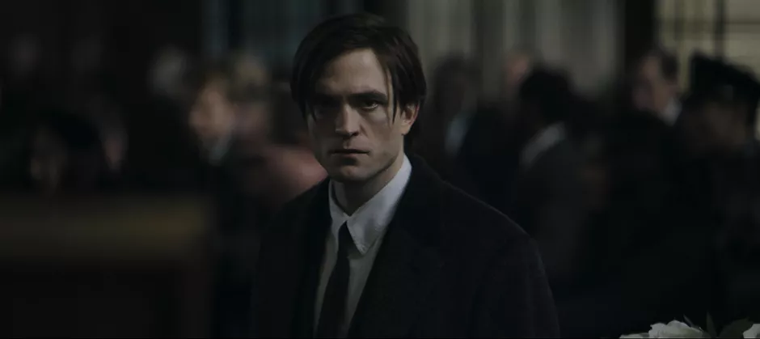
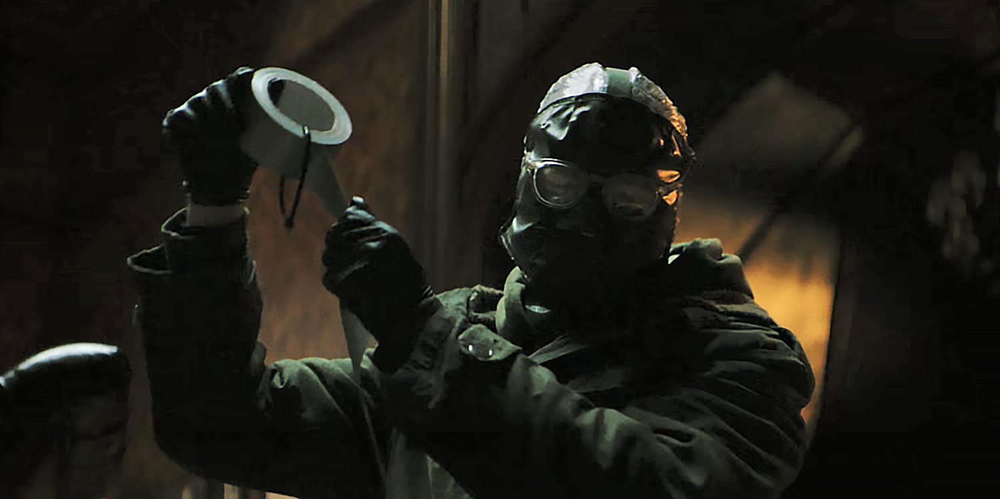
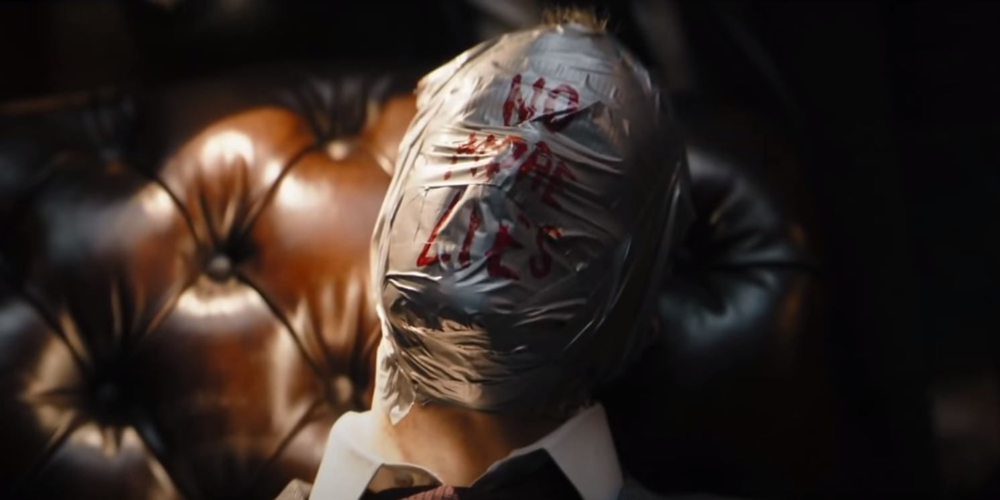

Datos del trailer de "The Batman" Elenco principal Robert Pattinson Zoe Kravitz Colin Farrell Paulo Dano Jeffrey Wright Teaser Trailer Fecha de subida: 22 de Agosto de 2020. Canal de Warner Bros. Imagenes del trailer    Curiosidades La serie "Gotham de HBO" es una precuela de esta pelicula El trailer tiene,hasta este momento,23 millones de visitas El traje de batman tiene un tono mas rustico que el de anteriores peliculas Hay una teoria que dice que el logo de batman,el que esta ubicado en el pecho,estaria formado por la pistola que mato a sus padres En esta pelicula se estaria contando el inicio de varios antagonistas de Batman Los primeros minutos de la pelicula se estarian basando en la saga de comics "The Long Halloween"